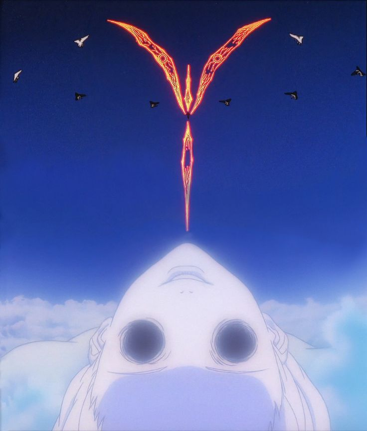
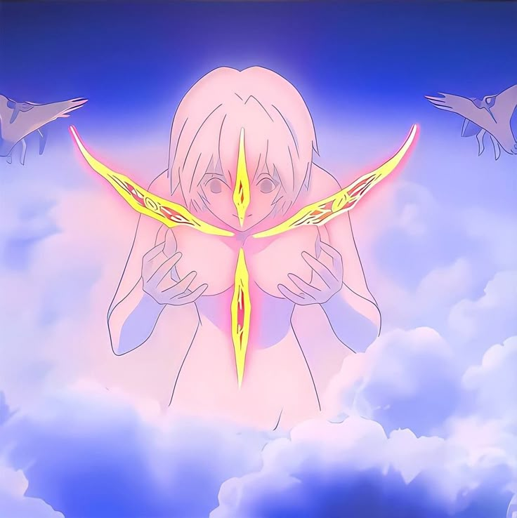
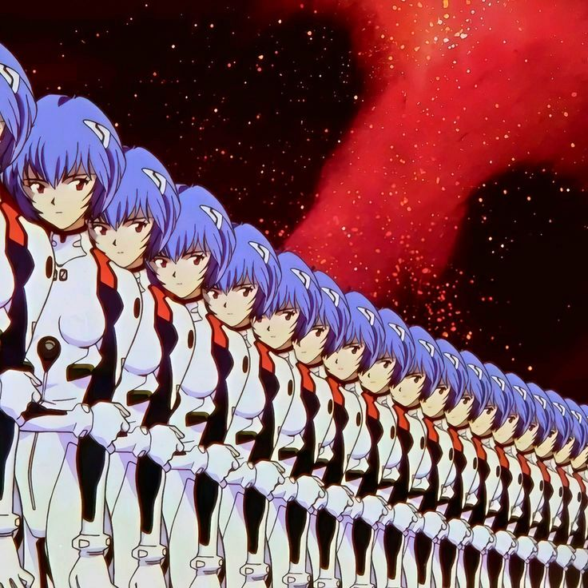

O filme The End of Evangelion explora profundamente o chamado Dilema do Ouriço, uma metáfora criada pelo filósofo Arthur Schopenhauer. Nessa ideia, os seres humanos são comparados a ouriços em um dia frio: eles precisam se aproximar para se aquecer, mas, ao fazer isso, acabam se ferindo com seus próprios espinhos.
Aplicado às relações humanas, isso significa que quanto mais buscamos proximidade emocional, mais nos tornamos vulneráveis à dor, rejeição e conflito. Ao mesmo tempo, o isolamento total também causa sofrimento, pois somos naturalmente seres sociais que precisam de conexão.
No filme, esse dilema é vivido intensamente por Shinji Ikari, que deseja ser amado e aceito, mas teme profundamente o sofrimento que vem com os relacionamentos. Esse conflito o paralisa e o leva a evitar conexões reais, mesmo desejando-as.
É nesse contexto que surge o Projeto de Instrumentalidade Humana, apresentado como uma “solução perfeita”: ao fundir todas as consciências em uma só, não haveria mais barreiras entre as pessoas, nem rejeição, nem solidão e, portanto, nenhuma dor emocional.
Porém, o filme levanta uma questão filosófica central: se não há mais separação entre os indivíduos, também não há identidade, escolhas ou relações reais. Sem dor, mas também sem individualidade, sem limites e sem o “outro”, ainda podemos chamar isso de existência humana?
Assim, The End of Evangelion sugere que a dor e a dificuldade dos relacionamentos são, paradoxalmente, o que dá significado à conexão humana. Aceitar o risco de se machucar pode ser o preço necessário para experimentar amor, identidade e liberdade.



volte para a pagina inicial